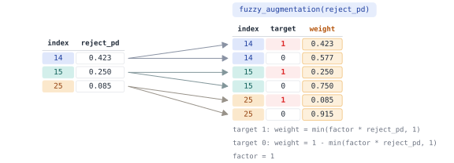

拒绝推断#
评分卡在结果已知的历史申请人上开发，而只有以往政策批准的申请人才有已知结果。模型从他们身上学习，随后却应用于每一个申请人，包括过去会被拒绝的那类申请人。拒绝推断为拒绝申请人补上结果，使模型可以在全部申请人上重新拟合。 kivi.reject_inference 以带权重的行返回这些结果，或者返回获批申请人的权重。 logistic_regression() 、 woe_table() 和 fit_spec() 的 weights 参数都可以接受这两种结果。
拒绝推断位于 变量筛选 之后，在全部申请人上重新拟合其模型；之后是 评分卡 ，对重新拟合的模型进行刻度。 fuzzy_augmentation() 和 parceling() 返回推断行， reweighting() 返回获批申请人的权重。
每种方法都依赖一个关于拒绝申请人的假设，而获批申请人无法证实它。因此示例使用每个人结果都已知的合成申请数据，以便把每种方法与完整结果所能得到的模型相对照。真实数据永远无法做这样的检验。
申请与审批#
make_applications() 模拟由现行评分卡和两条政策规则决定审批的贷款申请， 示例数据 介绍了这些数据。政策拒绝的申请无论评分如何都会被拒绝，因此通常不纳入开发总体，这里也是如此。获批的申请人称为 通过样本 ，其余称为 拒绝样本 ：
>>> import numpy as np
>>> import pandas as pd
>>> from kivi.datasets import make_applications
>>> applications = make_applications(rng=0)
>>> population = applications[~applications["policy_decline"]]
>>> accepts = population[population["approved"]]
>>> rejects = population[~population["approved"]]
>>> len(accepts), len(rejects)
(6770, 2467)
实际中拒绝样本的 target 是缺失的。这里它展示了拒绝推断试图还原的东西：拒绝样本的违约频率是通过样本的三倍。
>>> population.groupby("approved")["target"].mean().round(3)
approved
False 0.301
True 0.097
Name: target, dtype: float64
仅用通过样本的模型#
下面所有模型都使用相同的分组和在通过样本上拟合的同一套 WOE 编码，以便比较它们的系数。分位数边界不需要结果，因此在总体的全部申请人上拟合。征信查询次数取值很少，因此给定显式边界：
>>> from kivi.binning import bin_edges
>>> from kivi.selection import logistic_regression
>>> from kivi.spec import fit_spec
>>> features = ["age", "income", "debt_to_income", "inquiries", "housing", "employment"]
>>> edges = {
... column: bin_edges(population[column], bins=5)
... for column in ["age", "income", "debt_to_income"]
... }
>>> edges["inquiries"] = [-np.inf, 0, 1, 2, np.inf]
>>> spec = fit_spec(accepts[features], accepts["target"], bins=edges)
>>> model = logistic_regression(spec.woe_transform(accepts), accepts["target"])
>>> model.round(3)
coef se z p_value
intercept -2.230 0.043 -52.398 0.0
age 1.223 0.303 4.030 0.0
income 1.239 0.231 5.374 0.0
debt_to_income 1.356 0.182 7.436 0.0
inquiries 1.427 0.195 7.323 0.0
housing 1.057 0.204 5.174 0.0
employment 1.388 0.221 6.268 0.0
模型的 PD 是截距加上 WOE 值乘以系数之和的逻辑函数值：
>>> def predict(model, frame, spec=spec):
... coef = model["coef"]
... log_odds = coef["intercept"] + spec.woe_transform(frame) @ coef.drop("intercept")
... return 1 / (1 + np.exp(-log_odds))
>>> accept_pd, reject_pd = predict(model, accepts), predict(model, rejects)
>>> print(f"{reject_pd.mean():.3f}")
0.191
模型预测拒绝样本的坏账率为 19.1%，而他们实际的违约率为 30.1%。现行评分卡像阅读征信报告的审批人员一样，用到了特征之外的信息，因此在特征相同时，拒绝样本比通过样本风险更高。只用通过样本拟合的模型看不到这一点。
模糊扩充#
fuzzy_augmentation() 把每个拒绝申请人拆成以其 PD 为权重的一行坏样本和以总权重 1 的其余部分为权重的一行好样本。这些行重复拒绝样本的索引，因此 rejects.loc[inferred.index] 给出它们的特征：
>>> from kivi.reject_inference import fuzzy_augmentation, parceling, reweighting
>>> inferred = fuzzy_augmentation(reject_pd)
>>> inferred.head(4).round(3)
target weight
14 1 0.423
14 0 0.577
15 1 0.250
15 0 0.750
重新拟合时，把权重为 1 的通过样本与推断出的行拼接起来，并传入权重。进入拟合的只有拒绝样本的特征，绝不包括其 target 列：
>>> def refit(inferred, accept_weight=1.0):
... frame = pd.concat([accepts[features], rejects.loc[inferred.index, features]])
... target = pd.concat([accepts["target"], inferred["target"]])
... weights = pd.concat([pd.Series(accept_weight, index=accepts.index), inferred["weight"]])
... return logistic_regression(spec.woe_transform(frame), target, weights=weights)
>>> fuzzy = refit(inferred)
>>> np.allclose(fuzzy["coef"], model["coef"])
True
>>> (fuzzy["se"] / model["se"]).round(2)
intercept 0.91
age 0.75
income 0.72
debt_to_income 0.80
inquiries 0.68
housing 0.78
employment 0.72
Name: se, dtype: float64
重新拟合的系数就是仅用通过样本的模型的系数。在这组系数下，每个拒绝申请人坏样本行的权重恰好等于其拟合 PD，因此推断出的行不会改变拟合结果。只有标准误变小，尽管推断出的行并没有增加任何信息：它们被计为观测，因此任何包含推断行的拟合，其标准误都偏小。应在通过样本上选择变量，而不是依据扩充后拟合的 p 值。倍数为 1 时，只有在扩充后的样本上重新拟合编码或变量发生变化时，模糊扩充才会改变模型。
对倍数的敏感性#
factor 乘以拒绝样本的 PD，因此大于 1 的倍数假定拒绝样本比 PD 相同的通过样本风险更高。通过样本无法告诉我们高出多少，所以要比较几个倍数。 summary 汇总三项结果：拒绝样本推断的坏账率、它们在重新拟合的模型下的平均 PD，以及在同一生成器产生的第二个样本上的 Gini，该样本中每个申请人的结果都已知。 known 模型用全部申请人及其真实结果拟合，是真实数据永远无法提供的基准；它的推断坏账率就是拒绝样本的真实坏账率：
>>> from kivi.metrics import gini
>>> holdout = make_applications(rng=1)
>>> holdout = holdout[~holdout["policy_decline"]]
>>> def summary(model, inferred=None):
... rate = np.nan
... if inferred is not None:
... rate = np.average(inferred["target"], weights=inferred["weight"])
... return {
... "inferred": rate,
... "reject_pd": predict(model, rejects).mean(),
... "gini": gini(predict(model, holdout), holdout["target"]),
... }
>>> known = logistic_regression(spec.woe_transform(population), population["target"])
>>> models = {"accepts": model, "known": known}
>>> results = {"accepts": summary(model), "known": summary(known, rejects.assign(weight=1.0))}
>>> for factor in [1.25, 1.5, 2]:
... inferred = fuzzy_augmentation(reject_pd, factor=factor)
... models[f"fuzzy {factor}"] = refit(inferred)
... results[f"fuzzy {factor}"] = summary(models[f"fuzzy {factor}"], inferred)
>>> pd.DataFrame(results).T.round(3)
inferred reject_pd gini
accepts NaN 0.191 0.422
known 0.301 0.252 0.425
fuzzy 1.25 0.238 0.221 0.421
fuzzy 1.5 0.286 0.251 0.420
fuzzy 2 0.381 0.312 0.419
倍数为 1.5 时，拒绝样本推断的坏账率为 28.6%，接近其真实的 30.1%；它们在重新拟合的模型下的平均 PD 为 25.1%，接近 known 模型的 25.2%。即使 known 模型对拒绝样本的预测也低于 30.1%：它在全部申请人上拟合，缺少使拒绝样本与众不同的那部分信息。Gini 几乎不变。在这些数据上，拒绝推断纠正的是模型认为拒绝样本有多大风险，而不是模型如何对申请人排序。

拒绝样本推断的坏账率和重新拟合后的平均 PD 都随 factor 上升。虚线分别是拒绝样本的真实坏账率，以及 known 模型给出的平均 PD；倍数为 1.5 时与后者相交。#
这里已知的结果告诉我们哪个倍数合适。对于真实数据，倍数是一个假设，最好从开发样本之外寻找依据：在别处借款的拒绝申请人的征信结果、有意批准的一小部分拒绝申请人，或者业务判断。像上面那样报告一系列倍数下的结果。
打包法#
parceling() 把通过样本和拒绝样本的评分划分为评分段，默认是两个样本合并后的十个分位数评分段。在每个评分段内，按通过样本的坏账率乘以 factor 把拒绝样本标记为坏。标签用局部生成器抽取，因此在 rng 中给定种子即可复现：
>>> parcels = parceling(accept_pd, accepts["target"], reject_pd, factor=1.5, rng=0)
>>> parcels["target"].value_counts()
target
0 1818
1 649
Name: count, dtype: int64
拒绝样本中有 26.3% 被标记为坏，低于同一倍数下模糊扩充推断的 28.6%。打包法只知道拒绝申请人所在的评分段，不知道其特征和自身的 PD。风险最高的评分段上端开放，容纳了近三分之一的拒绝样本，它们都得到该评分段通过样本的坏账率，而这一坏账率低于模型给它们的平均 PD。
随机抽取给重新拟合带来噪声。在十个种子下，第二个样本上的 Gini 相差千分之几：
>>> ginis = [
... summary(refit(parceling(accept_pd, accepts["target"], reject_pd, factor=1.5, rng=seed)))
... for seed in range(10)
... ]
>>> print(f"{min(g['gini'] for g in ginis):.3f} to {max(g['gini'] for g in ginis):.3f}")
0.418 to 0.425
expected=True 则像 fuzzy_augmentation() 那样，以评分段的坏账率作为坏样本行的权重、以其补数作为好样本行的权重。这样消除了抽样噪声，因此下面的比较使用这种方式：
>>> parcels = parceling(accept_pd, accepts["target"], reject_pd, factor=1.5, expected=True)
>>> models["parceling"] = refit(parcels)
>>> results["parceling"] = summary(models["parceling"], parcels)
重新加权#
reweighting() 不增加任何行。在每个评分段内，它给每个通过样本权重（通过样本 + 拒绝样本）/ 通过样本，使加权后的通过样本代表该评分段的全部申请人：
>>> weights = reweighting(accept_pd, reject_pd)
>>> print(f"{weights.min():.2f} to {weights.max():.2f}, total {weights.sum():.0f}")
1.01 to 6.33, total 9237
>>> models["reweighting"] = logistic_regression(
... spec.woe_transform(accepts), accepts["target"], weights=weights
... )
>>> results["reweighting"] = summary(models["reweighting"])
重新加权假定拒绝样本与评分相同的通过样本违约情况相同，而这里恰恰不成立。权重之和等于总体的全部 9,237 个申请人，而只有 6,770 个通过样本有观测到的结果，因此拟合的标准误偏小。每个评分段还必须有通过样本。现行评分卡的 PD 以硬截断决定审批，按它划分时，截断点以上的评分段只有拒绝样本：
>>> reweighting(accepts["incumbent_pd"], rejects["incumbent_pd"])
Traceback (most recent call last):
...
ValueError: the score band (0.17118, 0.22683999999999996] holds 924 rejected applicant(s) but no accepted one, so no accepted applicant can stand in for them; use fewer bins or wider edges
硬截断#
最简单的方法不需要专门的函数：用仅用通过样本的模型给拒绝样本打分，把 PD 高于截断点的标记为坏、其余标记为好，然后重新拟合。这里的截断点把风险最高的 30% 拒绝样本标记为坏，接近它们的真实坏账率；与倍数一样，这个比例是借助已知结果选定的：
>>> cut_off = reject_pd.quantile(0.7)
>>> hard = pd.DataFrame({"target": (reject_pd > cut_off).astype(int), "weight": 1.0})
>>> models["cut-off"] = refit(hard)
>>> results["cut-off"] = summary(models["cut-off"], hard)
比较#
>>> pd.DataFrame(results).T.round(3)
inferred reject_pd gini
accepts NaN 0.191 0.422
known 0.301 0.252 0.425
fuzzy 1.25 0.238 0.221 0.421
fuzzy 1.5 0.286 0.251 0.420
fuzzy 2 0.381 0.312 0.419
parceling 0.263 0.229 0.421
reweighting NaN 0.186 0.422
cut-off 0.300 0.311 0.418
>>> compared = ["accepts", "known", "fuzzy 1.5", "parceling", "reweighting", "cut-off"]
>>> pd.DataFrame({name: models[name]["coef"] for name in compared}).round(3)
accepts known fuzzy 1.5 parceling reweighting cut-off
intercept -2.230 -2.067 -2.130 -2.104 -2.228 -2.574
age 1.223 1.640 1.652 1.404 1.201 2.644
income 1.239 1.345 1.624 1.373 1.146 2.980
debt_to_income 1.356 1.824 1.798 1.627 1.391 2.574
inquiries 1.427 1.899 1.901 1.596 1.286 3.459
housing 1.057 1.136 1.114 0.938 1.006 2.545
employment 1.388 1.504 1.817 1.542 1.393 3.192
在通过样本的 WOE 编码下，known 模型给每个变量的权重都高于仅用通过样本的模型：在全部申请人中，特征区分好坏的能力比在通过样本中更强。各方法的比较如下：
排序。 表中每种方法在第二个样本上的 Gini 都在 0.418 到 0.422 之间，known 模型也只有 0.425；打包法的随机标签只是偶然达到这一水平。拒绝样本额外的风险来自任何特征都不包含的信息，因此没有方法能把它找回来。
模糊扩充和打包法。 倍数大于 1 时，两者都会把拒绝样本的预测坏账率推向其真实值，并使大多数系数向 known 模型的系数靠拢。倍数为 1.5 时，模糊扩充使截距和六个变量中的四个与 known 模型的差距在 0.07 以内，但
income和employment的系数超过了 known 模型。打包法降低了housing的系数，而 known 模型提高了它。两种方法的作用都以倍数正确为限。重新加权。 它在这里没有帮助：权重无法使拒绝样本比同一评分段的通过样本风险更高。
硬截断。 它把截断点以上的拒绝样本视为必然为坏、其余视为必然为好，因此推断的结果与模型自身的评分完全一致。重新拟合使每个变量的系数变为原来的 1.9 到 2.4 倍，排序能力也略差。
重新拟合 WOE#
上面的比较保留了通过样本的 WOE 编码。实际中常常用推断出的权重在扩充后的样本上重新拟合分组，使拒绝样本也影响它们所在分组的 WOE。 fit_spec() 接受这些权重：
>>> inferred = fuzzy_augmentation(reject_pd, factor=1.5)
>>> frame = pd.concat([accepts[features], rejects.loc[inferred.index, features]])
>>> target = pd.concat([accepts["target"], inferred["target"]])
>>> weights = pd.concat([pd.Series(1.0, index=accepts.index), inferred["weight"]])
>>> augmented_spec = fit_spec(frame, target, bins=edges, weights=weights)
>>> augmented = logistic_regression(augmented_spec.woe_transform(frame), target, weights=weights)
>>> known_spec = fit_spec(population[features], population["target"], bins=edges)
>>> known_refit = logistic_regression(known_spec.woe_transform(population), population["target"])
>>> pd.Series({
... "accepts": gini(predict(model, holdout), holdout["target"]),
... "fuzzy 1.5, WOE refitted": gini(
... predict(augmented, holdout, augmented_spec), holdout["target"]
... ),
... "known, WOE refitted": gini(predict(known_refit, holdout, known_spec), holdout["target"]),
... }).round(3)
accepts 0.422
fuzzy 1.5, WOE refitted 0.425
known, WOE refitted 0.430
dtype: float64
重新拟合 WOE 使 Gini 从 0.422 升到 0.425，而用已知结果及其自身 WOE 编码的模型为 0.430。它弥补了一部分差距，而这个差距本来就很小；倍数为 1 时效果也差不多：提升来自重新拟合拒绝样本所在分组的 WOE，而不是来自倍数。
局限#
这些方法都从通过样本推断结果，因此无法揭示通过样本没有体现的东西。大于 1 的倍数表达的是拒绝样本风险高出多少，而数据无法估计它。
每种方法的权重都会使
logistic_regression()的标准误偏小、stepwise()的 p 值偏低，因为推断出的行和额外的权重被计为观测。应在通过样本上选择变量，并把重新拟合的 p 值视为偏乐观的结果。kivi 没有实现 Heckman 两阶段模型或其他样本选择的双变量 probit 模型，也没有实现迭代重分类。